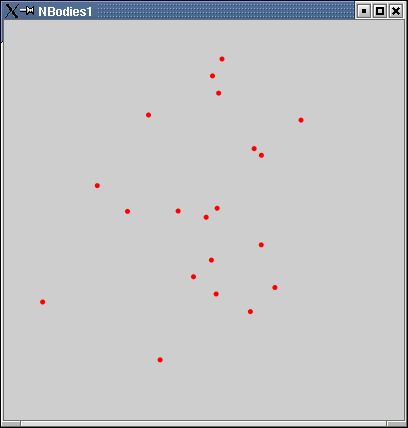

Package edu.rit.m2mi.nbodies1
is a program for the N Bodies Problem
using M2MI.
Each of the bodies is electrically charged,
so each body repels every other body
with a force inversely proportional
to the square of the distance between them.
Each of the bodies also experiences
a central restoring force
as though it were attached by a spring to the origin,
with a force directly proportional
to the distance from the origin.
The program calculates and displays
each body's position as a function of time.
Class NBodies1 is the main program.
To run the program, execute this command,
substituting the desired values for the parameters:
java edu.rit.m2mi.nbodies1.NBodies1 20 10 1 0.1 100 9982734
The parameters are:
-
The number of bodies, n
-
The display radius, r;
the X axis and the Y axis
both range from -r to +r
-
The charge of each body
-
The amount of simulated time for each step
-
The amount of real time for each step (milliseconds)
-
A random seed
The bodies are given random initial positions and velocities.
The program then displays a GUI
showing the bodies' motion as time passes:

M2MI Library Version 02-Jul-2002